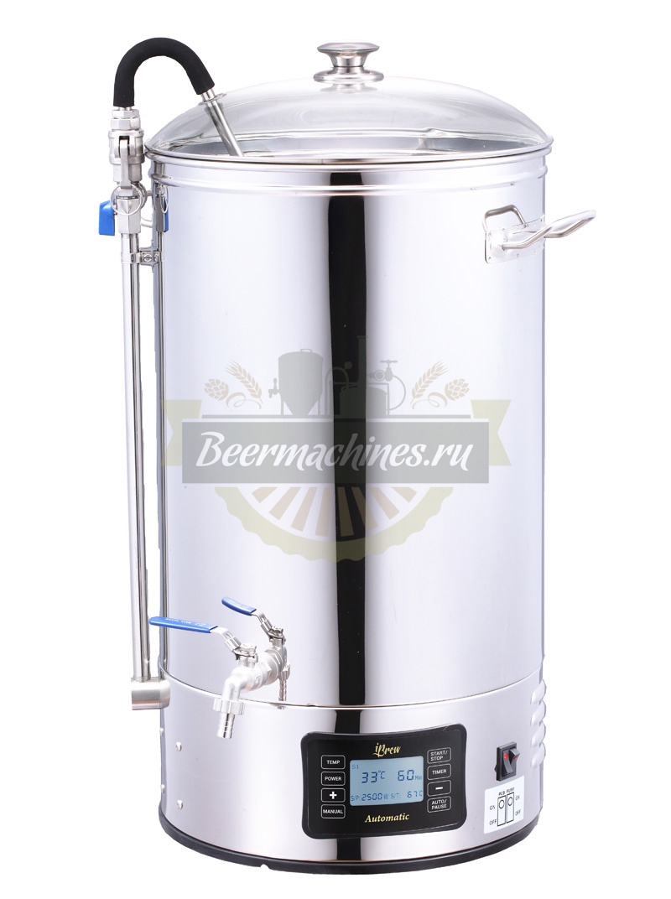

PID controller introduction
© 2018 Anton Lebedevich
Motivation

It could happen to you
wikipedia.org/wiki/Self-oscillation
- load balancers
- autoscaling
- flow control
- …
Mash Tun
Mash Tun
- 50l
- 3000W
- 100W step regulation
- digital thermometer
Simplified Physical Model
temperature_derivative = (power - heat_transfer_coefficient * surface * (temperature - external_temperature)) \
/ heat_capacity


Relay Controller
if temperature[i] < setpoint[i]:
power[i+1] = max_power
else:
power[i+1] = 0


meet P from PID
error[i] = temperature[i] - setpoint[i]
next_power = - proportional * error[i]


Clip Power Range
error[i] = temperature[i] - setpoint[i]
next_power = - proportional * error[i]
if next_power > max_power:
next_power = max_power
elif next_power < 0:
next_power = 0


wikipedia.org/wiki/PID_controller


Books to read
- intro:
- Modeling and Simulation in Python http://greenteapress.com/wp/modsimpy/
- Feedback Control for Computer Systems
- medium:
- William S. Levine-The Control Handbook, Second Edition_ Control System Fundamentals, Second Edition (Electrical Engineering Handbook)-CRC Press (2010)
- Feedback Systems: An Introduction for Scientists and Engineers Karl J. Åström and Richard M. Murray http://www.cds.caltech.edu/~murray/amwiki/index.php?title=Main_Page
- advanced:
- Asynchronous Control for Networked Systems
Q&A
Anton Lebedevich
mabrek@gmail.com